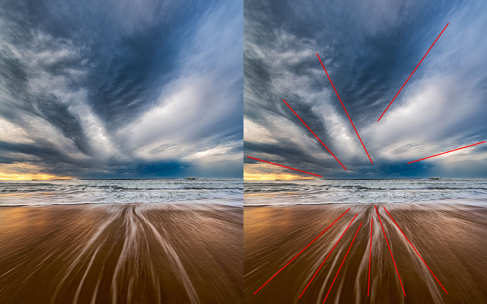
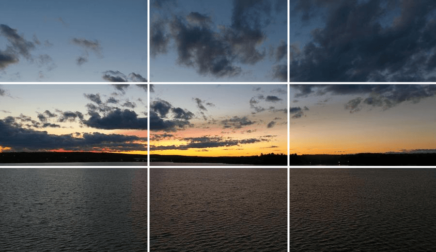
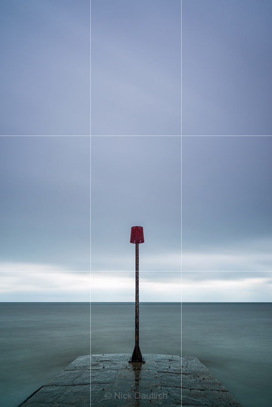
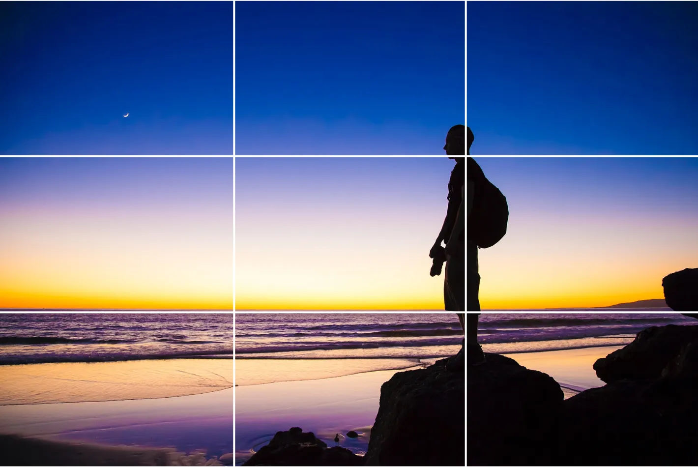

삼분할법으로 초점 설정
삼분할법을 활용한 자연스러운 초점 배치. 교차점에 주요 피사체 위치
초점 설정 핵심 기법
삼분할법: 프레임을 9등분하여 교차점에 초점 배치
유도선: 선이나 패턴으로 시선을 초점으로 안내
피사계 심도: 선택적 초점으로 주변부 흐림 처리
대비 활용: 밝기, 색상, 크기의 차이로 강조
Leading Lines
유도선 활용
다리의 선형 구조가 시선을 주 피사체인 개로 자연스럽게 유도
Composition
다양한 구도 기법
대칭, 패턴, 프레이밍 등을 통한 초점 강조 방법

Perspective
원근법과 유도선
소실점을 활용한 강력한 시선 집중과 깊이감 표현

Grid System
그리드 시스템
수직/수평 분할을 통한 체계적인 초점 배치와 균형감

Vertical
세로 구성에서의 초점
세로 프레임에서의 삼분할법 적용과 수직적 초점 설정

UI Focus
디지털 미디어 초점
인터페이스 디자인에서의 시각적 위계와 사용자 시선 유도